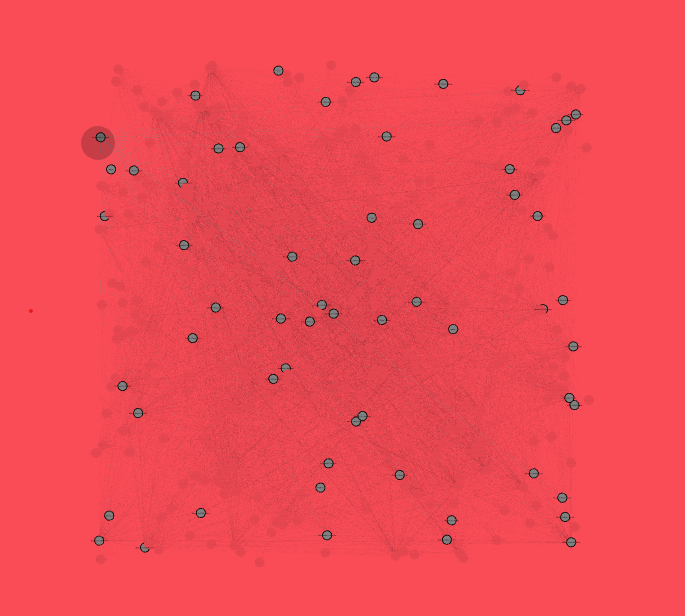
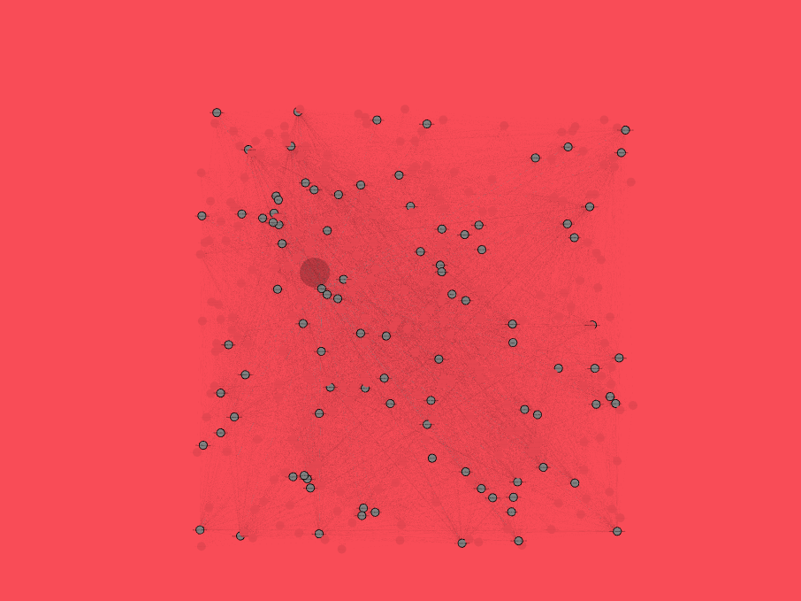
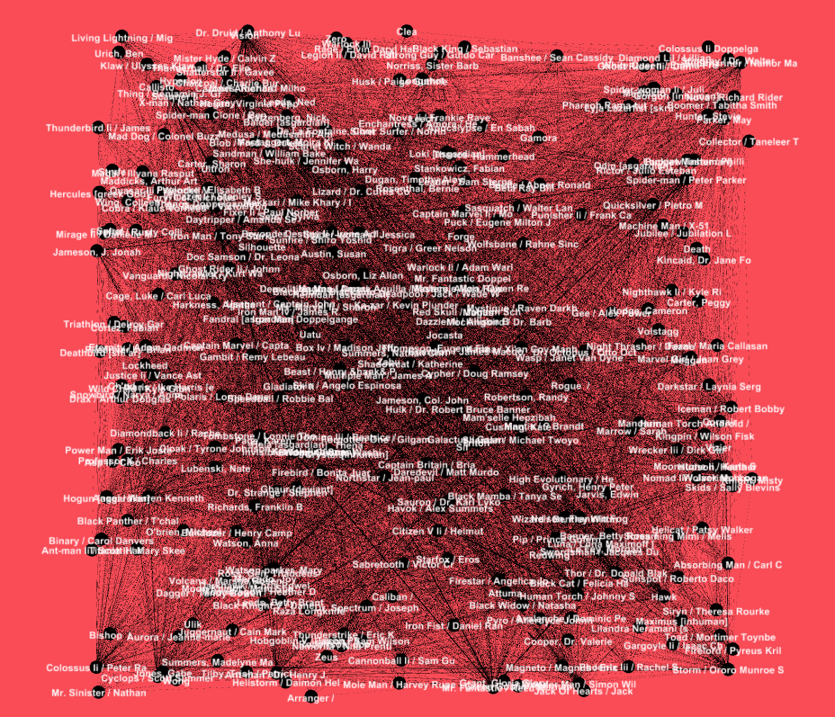

Network Visualization
Software
Gephi is the software used for the visualization of network. It will help us to reveal patterns in the network that is created using the data set.
Data
The data-set being used is Marvel Comics dataset which is a coappearance weighted network of characters from the Marvel Comic characters. The Network is in .gexf file format. It holds data about the link between two characters that appeared on different issues over the years in comics.
It consists of 327 nodes and 9891 edges,i.e, 327 comic characters linked by 9891 comic book issues. The graph is undirected.
Initial Overview
The network is initally loaded as below in Gephi, it needs a lot of processing to understand/retrive any information from it which is explained ahead.
Processing the Network
We change the layout to force atlas 2, it helps in bring nodes which are connected together therefore helping us detect community of nodes. This is done by referencing to the issue number and issue year and cross referencing it to the other issues.
Final Network
After making changes in the Preview panel we obtain a network as shown below. We can now easily see different clusters of characters which are together on the same page.
References